Операционная система
(ОС, OS, operating system) — это набор программ, обеспечивающих работу компьютера или другого устройства и взаимодействие с ним пользователя.
Компоненты операционной системы
Операционная система представляет собой многослойную структуру, в центре которой находится ядро. Поверх него располагаются драйверы и службы, а оболочкой выступает пользовательский интерфейс.
Ядро
Это основа операционной системы. Ядро представляет собой часть программного обеспечения, работающую напрямую с компонентами компьютера. Также оно отвечает за управление процессами, памятью компьютера, файловой системой, обработку входных и выходных данных.
Ядра бывают монолитными и модульными. В первых все инструменты, необходимые для работы, находятся внутри одной программы. Например, такое ядро использовалось в DOS. Но сейчас монолитных ядер почти не осталось, так как все операционные системы перешли на модульную архитектуру.
В модульном ядре все компоненты разделены на небольшие блоки, которые работают независимо друг от друга. Такая структура более стабильна, так как ошибки в одном компоненте не приводят к остановке всей системы. ОС с модульными ядрами в свою очередь бывают двух видов: с микроядрами, как, например, QNX и Symbian, и монолитные с подгружаемыми модулями — Windows и Linux.
Драйверы
Это программное обеспечение, благодаря которому операционная система работает с подключённым в устройстве «железом». Без драйверов она не узнает, что могут делать видеокарта, клавиатура, принтер и другие комплектующие и как правильно отправлять к ним запросы.
Пользовательский интерфейс
Бывает графическим (GUI) и командным (CLI).
Графический интерфейс (GUI) представляет собой визуальную среду с кнопками, иконками, меню и диалоговыми окнами. Именно он используется по умолчанию в Windows, macOS, Android, iOS и средах рабочих столов Linux.
Командный интерфейс (CLI) использовался в DOS, а сейчас реализован в виде терминала в Linux и macOS и командной строки в Windows, в которых пользователь вводит команды с клавиатуры. CLI даёт возможность гибко управлять системой, используя функции и скрипты. Его чаще всего используют разработчики и системные администраторы.
Виды операционных систем
Все существующие ОС можно классифицировать по нескольким признакам: разрядности, типу лицензии и области применения.
По разрядности
32-битные (x32). Адресуют до 4 ГБ оперативной памяти и могут запускать программы, написанные только под 32-битную систему.
64-битные (x64). Ограничение по оперативной памяти — до 16 ТБ. Такие ОС поддерживают 64-битные программы, а 32-битные запускают через эмулятор.
Все современные версии операционных систем на компьютерах и смартфонах являются 64-битными. 32-битные версии иногда используют в устройствах со слабым «железом».
По типу лицензии
Коммерческие. Это платные ОС, которые лицензируются за деньги. Как правило, у них закрытый исходный код, который принадлежит конкретной компании. Например, Windows от Microsoft или macOS от Apple.
Свободно распространяемые. Бесплатные для пользователей, но могут включать платную поддержку. Например, как у продуктов Red Hat или Canonical.
Такие ОС можно свободно скачивать, распространять и даже модернизировать под себя. Главный пример — Linux, вариантов которого насчитывается уже более 500.
По области применения
Серверные операционные системы используются на серверах. Они включают в себя инструменты для обмена данными между компьютерами через сетевые соединения. Такими ОС являются Windows Server и Unix-системы для серверов.
Клиентские — системы для использования на автономных компьютерах или устройствах, подключённых к серверам. К примеру, Windows 11, macOS 14.3 или Ubuntu Linux.
Мобильные операционные системы разработаны для смартфонов и планшетов. Они позволяют работать с мобильными приложениями, управлять настройками сотовой сети и энергопотреблением. К ним относят Android и iOS.
История развития операционных систем
История развития операционных систем насчитывает около 70 лет. За это время простейший набор заданий для мейнфреймов, написанный на перфоленте, эволюционировал в то, что сейчас мы видим на экране компьютера или смартфона.
Всю историю можно разделить на три этапа.
Первый этап (1955–1965 годы)
История операционных систем начинается в 1955 году, когда инженер General Motors Роберт Л. Патрик и программист North American Airlines Оуэн Мок разработали для IBM 704 GM-NAA I/O. Её иногда называли системой ввода — вывода.
GM-NAA I/O позволяла мейнфрейму автоматически выполнять задания по проведению сложных математических вычислений. Их результаты выводились на подключённый принтер. Благодаря этому операторы мейнфрейма могли проводить вычисления без постоянной смены специальных плат.
В 1964 году появилась ОС Multics, созданная совместными усилиями Мичиганского университета, General Electric и Bell Labs. В ней была реализована возможность параллельной работы нескольких программ, концепция виртуальной памяти и файловая система на основе дерева каталогов, используемые и сегодня.
Второй этап (1965–1980 годы)
В 1969 году в исследовательской лаборатории Bell Labs разработали ОС Unix. Она — основа современных операционных систем.
Unix поддерживала язык C и протокол TCP/IP. Это первая ОС, которую можно было установить на сервер. К ней могли подключиться компьютеры-клиенты, позволяя одновременно работать нескольким пользователям.
В 1973 году компания Xerox разработала первую операционную систему с графическим интерфейсом — Alto OS. В ней была реализована оконная система с различными типами элементов управления, такими как кнопки, поля ввода и списки.
Так как Alto OS работала только на компьютерах Xerox Alto, которые были дорогими, она использовалась только внутри самой компании Xerox и в некоторых университетах.
Третий этап (1980 — настоящее время)
В это время появляются персональные компьютеры, доступные не только корпорациям и университетам, но и обычным пользователям.
В 1984 году компания Apple выпускает первую систему для своих Macintosh под названием System 1, созданную на основе Alto OS. С её помощью Стив Возняк планировал избавить пользователей от сложности существующих ОС и вывести компьютеры компании на массовый рынок.
Microsoft старалась не отставать и в 1985 году выпустила Windows 1.0. Операционная система не была инновационной, а представляла собой графическую оболочку для MS-DOS, предыдущего продукта, созданного для компании IBM.
В 1991 году в игру включается независимый разработчик Линус Торвальдс. На основе Unix он создаёт собственную операционную систему Linux и выкладывает её в открытый доступ.
Так как исходный код Linux распространяется свободно, к развитию системы с самого начала подключается большое число независимых разработчиков. Но первая графическая оболочка для ОС GNOME появилась лишь в 1999 году.
Операционные системы для смартфонов развивались параллельно. С 1998 года разрабатывалась Symbian — ОС для Nokia, а с 1999 года — BlackBerry OS для BlackBerry от компании RIM.
Из современных мобильных операционных систем первой в 2007 году появилась iOS, созданная на ядре Linux компанией Apple.
Инноваций было немного: первый мультитач в мобильном устройстве, виртуальная клавиатура, синхронизация с iTunes и браузер Safari. Главное преимущество той iOS — стабильная работа благодаря разработке под один конкретный девайс.
Главным конкурентом iOS стала разработанная в 2008 году Android OS. Её выпустила компания Android Inc., которую позже приобрёл Google. Эта система также создана на ядре Linux, но распространяется с открытым исходным кодом.
Основное отличие Android от конкурентов — возможность кастомизации дизайна и настроек на любом устройстве. Первая версия ОС вышла на смартфоне HTC Dream.
Популярные операционные системы
С момента разработки первой операционной системы прошло больше 60 лет. Было выпущено огромное количество разных ОС, но к сегодняшнему дню популярность обрели продукты компаний-гигантов и модификации операционных систем с открытым исходным кодом.
Windows. Знакомая большинству операционная система с многолетней историей. Её главные преимущества — это дружелюбный интерфейс, обширная совместимость с программами, играми и периферией. Это сделало её самой популярной системой среди пользователей ПК и ноутбуков. Но она является платной, закрытой и требовательной к «железу».
macOS — ОС для Macbook и iMac. Компания Apple постаралась над архитектурой своей «оси» и максимально оптимизировала её под используемые комплектующие. В первые годы macOS преимущественно выбирали специалисты творческих профессий — видеомонтажёры, журналисты и другие, — но сейчас многие покупают устройства компании из-за их стабильной работы и личных предпочтений к дизайну.
Любителям тонкой настройки операционной системы и инструментов с открытым исходным кодом подойдут бесплатные Linux-подобные ОС. В них удобно администрировать серверы, работать с базами данных и вообще делать всё то же самое, что и в Windows и macOS.
Android распространяется с открытым исходным кодом. Большое количество компаний разрабатывают на его основе собственные интерфейсные оболочки для своих Android-смартфонов.
Такие преимущества ОС, как понятное управление, возможности широкой настройки интерфейса, большой магазин приложений, завоевали «Андроиду» популярность у производителей мобильных устройств и других портативных гаджетов.
iOS устанавливается только на мобильные устройства от Apple. Вместе они образуют единую экосистему, что является одновременно и плюсом, и минусом. Сами по себе они работают быстро и стабильно, отлично синхронизируясь с другими гаджетами компании. Но при взаимодействии со сторонними ОС могут возникать ошибки. Система является закрытой, поэтому кастомизировать её не получится, а приложения можно установить только из официального магазина — App Store.


Любой работающий компьютер есть связка четырёх типов программного обеспечения: операционная система, программы и приложения, драйверы и BIOS.
Компоненты Windows, или из чего Windows состоит

Программная оболочка = Shell:
Это часть операционной системы, которая завязана и с пользователем и с приложениями. Именно шелл позволяет нам запускать флешки, устанавливать программы, запускать word-вый документ и печатать в нём, сохраняя в любое дозволенное системой место, которое заметно проводнику. Shell – это и File Explorer (проводник Windows), и контрольная панель Пуск, и окна Свойства системы и Мой компьютер. Человек или пользователь знает шелл как различные инструменты пользовательского интерфейса, такие как диалоговые окна, ярлыки и иконки, контекстные меню дополнительных команд.
А для программ шелл это команды и процедуры, которые эти программы могут вызывать: печать информацию через принтер, читать данные из баз, отображать что-то на экране.
Сам шелл состоит из нескольких подсистем, которые управляются в пользовательском режиме. Такой режим означает, что эти подсистемы имеют очень ограниченный доступ к системной информации, и доступ к “железу” может осуществляться ТОЛЬКО через системные службы (службы самой Windows). Одна из таких подсистем – подсистема безопасности Win32 – обеспечивает вход в систему (регистрацию пользователя), сохранение и распространение его привилегий на файлы и папки, а также другие функции безопасности. Абсолютно все программы и приложения “здороваются с Windows” только через подсистему Win32.

Ядро
Как и в других ОС, отвечает за работу с оборудованием, которое внутри компьютера находится или во время работы к компьютеру “пристёгивается”. Режим ядра полномочий имеет гораздо больше. Никакая программа, установленная в Windows, не имеет доступа к “железу” напрямую – только через шелл, который, в свою очередь, посылает все запросы к ядру. Такая система взаимодействия обеспечивает стабильную работу ОС. Это чем-то напоминает ресторан: перед тем как заказать блюдо, вам нужно позвать официанта (к шеф-повару и на саму кухню вас не пропустят).
Ядро состоит из двух компонентов:
слой аппаратных абстракций HAL – hardware abstraction layer – (ближайший к железу уровень)
уровень исполнительных служб (обеспечивает взаимодействие подсистем в пользовательском режиме со слоем аппаратных абстракций)
Данные конфигурации
Ну, а всем операционным системам нужно место, где данные о программах и оборудовании, а также настройках и предпочтении пользователя можно хранить. Нужно хранить информацию и о том, как пользователь хочет, чтобы Windows и программы выглядели, где хранить скачиваемое и создаваемое и т.д. Для всего этого (или для почти всего) Windows использует … правильно, реестр. Некая информация хранится в файлах инициализации (характерные файлы с расширением .ini и .inf).
И когда установленная программа запускается, перед появлением какого-либо окна она сначала посмотрит реестр и прочитает эти файлы, и только потом уже запуск приложения можно считать успешным.

Как Windows управляет программами?
Если программа установлена, мы подразумеваем, что её остов где-то хранится. Чаще всего это жёсткий диск или флешка. Когда пользователь запускает программу, некоторые из её файлов копируются в оперативную память. Так появляется процесс. практически в том виде, каком мы видим его в Диспетчере задач или Process Explorer. Процессом можно назвать программу, запущенную вместе с соответствующими системными службами и другими ресурсами. Ресурсы нередко включают в себя и другие программы, включая захват дополнительных ячеек оперативной памяти для временного хранения данных. Когда процесс делает запрос к системе по типу “Мне нужны ресурсы!”, подразумевается, что программа обращается именно к подсистеме Win32. Так появляется поток данных. Поток – это единичная, выделенная задача (запустить или создать документ, вставить рисунок из буфера обмена, распечатать документ на принтере и т.д.)
Как видите, потоков может быть несколько. Это называется многопоточность/мультипоточность: например, окна браузеров могут запускаться в нескольких вкладках или нескольких отдельных окнах. Выражаясь технически, в обоих случаях речь идёт о нескольких разных процессах браузер.exe.

Не, чёта не хочу пока.
История Windows

В начале 80 годов прошлого века компания IBM работала над персональным компьютером на базе процессора Intel 8088. С середины 70 годов компания Microsoft была основным поставщиком Basic для восьмибитных микрокомпьютеров. Когда IBM обратилась к Microsoft для лицензирования Basic для их нового компьютера IBM PC, Microsoft согласилась, а также посоветовала обратиться к компании Digital Research для лицензирования операционной системы CP/M. Но, получилось так, что глава Digital Research не нашел в своем графике времени для встречи для IBM, и IBM снова обратилась к Microsoft, теперь уже с просьбой решить вопрос операционной системы для IBM PC. Microsoft купила клон ОС CP/M у компании Seattle Computer Products и перенесла её на IBM PC. Итоговым названием получившейся ОС стало MS-DOS 1.0.
IBM PC
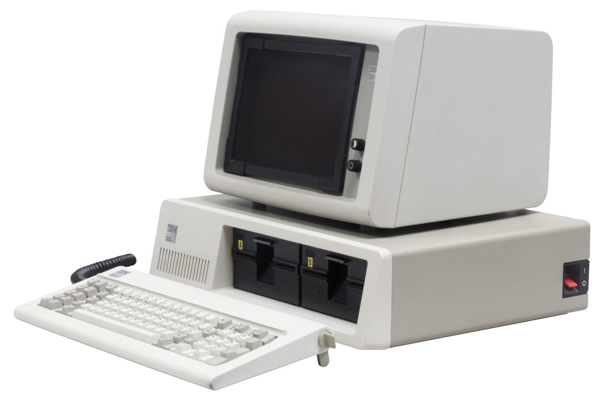
Первые продукты с названием «Windows» от Microsoft не были операционными системами. Это были графические среды для MS-DOS. На фоне успеха, в том числе и коммерческого, пользовательского интерфейса на Apple Lisa, компания решила реализовать графический интерфейс на IBM PC с MS-DOS. В отличии от относительно дешевых IBM PC, Apple Lisa стоили дорого (почти 10 тысяч долларов), и немногие покупатели могли позволить купить их. Microsoft решила занять нишу дешевых компьютеров с графическим интерфейсом. При этом низкая стоимость достигалась экономией на комплектующих и более низкая производительность, по сравнению с Lisa, избежать не получилось. Так, в 1985, 1987 и в 1990 выходят первые три версии Windows — 1.0, 2.0 и 3.0. Причем за первые шесть месяцев после релиза Windows 3.0 было продано более 1 миллиона экземпляров. Дальнейшее развитие Windows можно разделить на два направления — Windows на базе MS-DOS и Windows на базе NT.
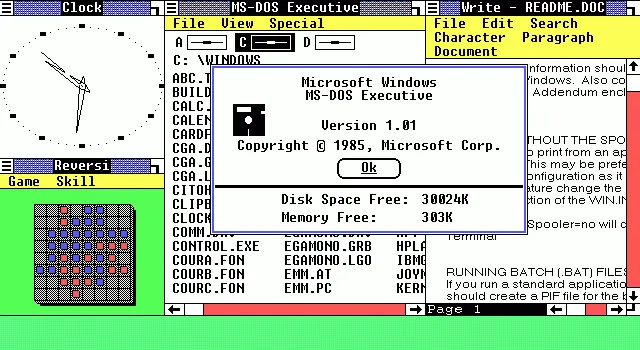
Windows 1.01
Windows 9x
Windows на базе MS-DOS или Windows 9x не были первыми ОС от Microsoft, но они продолжали «старые традиции» и были построены на основе 16-битного кода MS-DOS. В августе 1995 года была выпущена Windows 95 — первая система семейства Windows 9x. Она уже была полноценной операционной системой с соответствующими возможностями. Однако у системы были проблемы с безопасностью (например, не было «администратора») и с изоляцией приложений. Зависание 16-битного приложения приводило к блокировке всей системы. Проблемы со стабильностью достались и Windows 98 и Windows ME, которые отличались от выпуска 95 года рядом небольших обновлений.
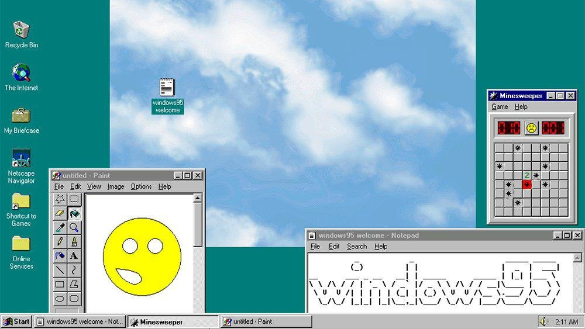
Windows 95
Windows NT
В целом, к концу 80-х годов в Microsoft появилось понимание о необходимости разработки операционной системы не на базе MS-DOS. Параллельно с разработкой софта, связанного с MS-DOS, Microsoft наняла команду инженеров из компании DEC для разработки новой 32-битной операционной системы. Главой группы стал Дэйв Катлер — один из главных разработчиков ОС VMS. Новая система была названа NT — от сокращения New Technology. Основной упор при разработке NT делался на безопасность и надежность системы, а также на совместимость с Windows на MS-DOS. Так получилось, что опыт при разработке VMS повлиял на NT и сходство между ними стало причиной спора между DEC и Microsoft. По итогу спор был решен во внесудебном порядке.
Первая система Windows называлась Windows NT 3.1 и была выпущена в 1993 году. Это была первая ОС от Microsoft. Индекс 3.1 был выбран для соответствия Windows 3.1 на MS-DOS. Эта версия не имела особого успеха. Для NT требовалось больше памяти, 32-разрядных приложений на рынке было мало, возникали проблемы с совместимостью драйвером. Достичь поставленных целей смогли в NT 3.5. А первым серьезным обновлением для NT стала версия 4.0 в 96 году. Теперь эта система была мощна, надежна и безопасна, а также обеспечивала тот же интерфейс, что и Windows 95 (которая к тому моменту была чрезвычайно популярной).
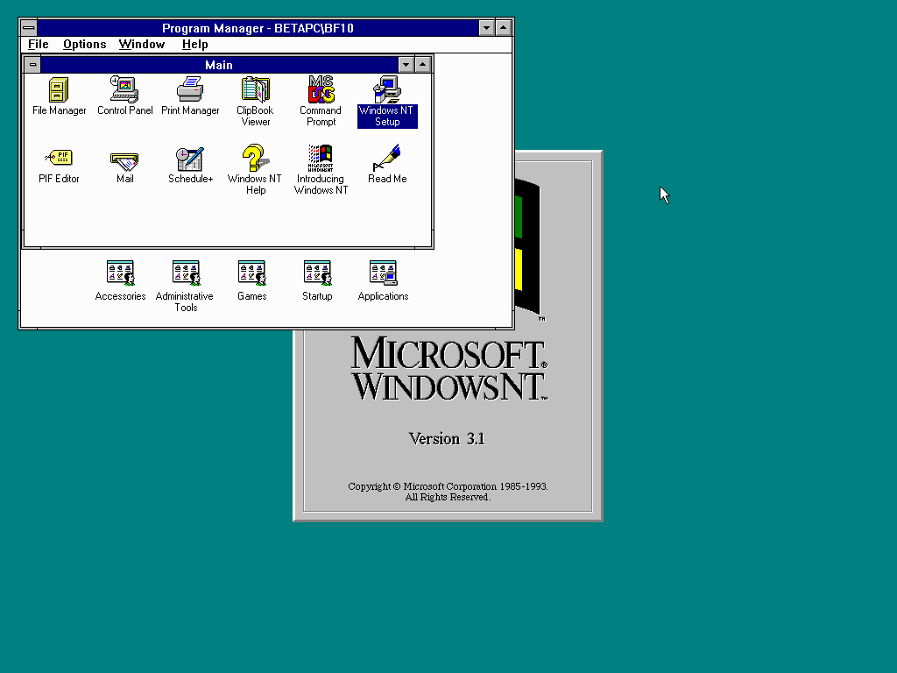
Windows NT 3.1
В 2000 году вышла новая версия Windows — Windows 2000. Она развивала идеи, заложенные в системы NT. Был добавлена технология Plug-and-Play, управление электропитанием и улучшен интерфейс пользователя.
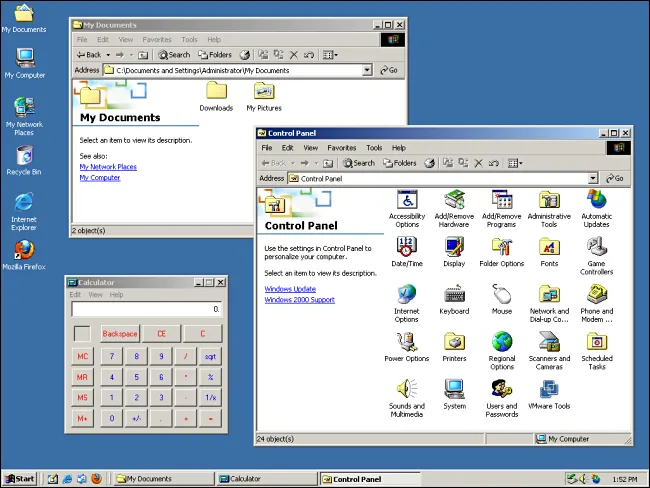
Windows 2000
Успех Windows 2000 задал вектор развития для следующего поколения — Windows XP. В «хрюшке» Microsoft улучшила совместимость, интерфейс стал более дружелюбным. Стратегия Microsoft завоевывать аудиторию уже знакомыми системами дала плоды — за несколько лет Windows XP была установлена на сотнях миллионах ПК. Эпоха MS-DOS подошла к концу.
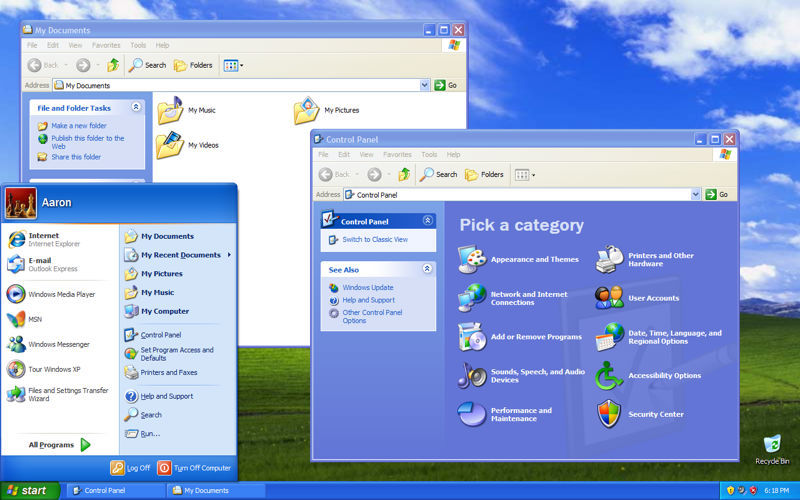
Windows XP
Следующий проект Microsoft пал жертвой собственных амбиций. Через пять лет после Windows XP, в 2006 году на свет вышла Windows Vista. В ней был переделан графический интерфейс, переработаны и добавлены функциональные возможности в плане безопасности. Была улучшена производительность, надежность.
Первоначальные планы Microsoft по поводу Vista были настолько обширны, что через несколько лет после начала разработки проект пришлось сильно ограничить. Vista включала в себе 70 миллионов строк кода, часть которого составлял «причесанный» код XP. Неудача Vista отчасти с тем, что она вышла не в то время. На 2006 год пришелся бум недорогих компьютеров, которые не могли обеспечить достаточную для Vista производительность.
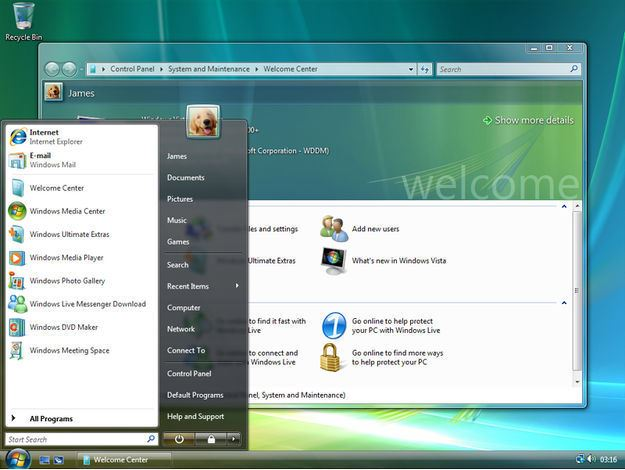
Windows Vista
Проблемы Vista были учтены при разработке Windows 7. Microsoft уделила большее внимание тестированию и производительности новой системы. Windows 7 быстро вытеснила Vista, а затем и XP, став самой популярной версией Windows до появления Windows 10 (сейчас Windows 7 на втором месте по популярности).
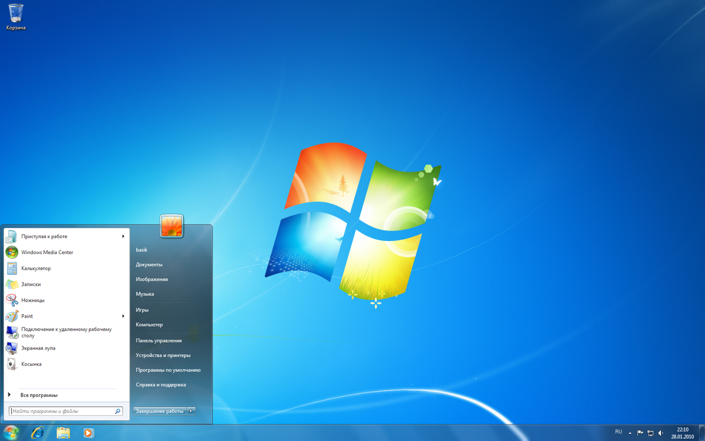
Windows 7
Бум смартфонов в начале 2010-х подтолкнул Microsoft к созданию операционной системы, которую можно было бы развернуть на разных устройствах: на телефонах, планшетах, приставках и т. д. В результате этой работы мир узрел Windows 8. «Восьмерка» построена на модульном подходе MinWin для получения небольшого ядра ОС, которое можно было бы расширить на линейку других типов устройств. Но аудитория встретила холодно такой подход. Многие люди критиковали «смартфоноподобный» интерфейс на ПК, отсутствие кнопки пуск. Для решения многих проблем Microsoft выпустила обновление под названием Windows 8.1, которая, помимо исправления имеющихся ошибок, добавила новые функции.
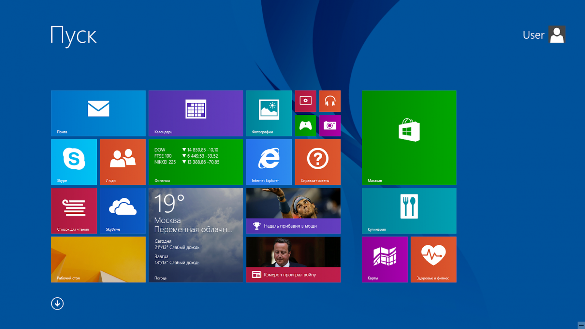
Windows 8.1
И вот, к 2015 году Microsoft выпускает Windows 10. При разработке Microsoft продолжала развитие идеи единой системы для разных устройств. В «десятке» появилась голосовая помощница Кортана, вернули меню «Пуск», улучшена системная безопасность.
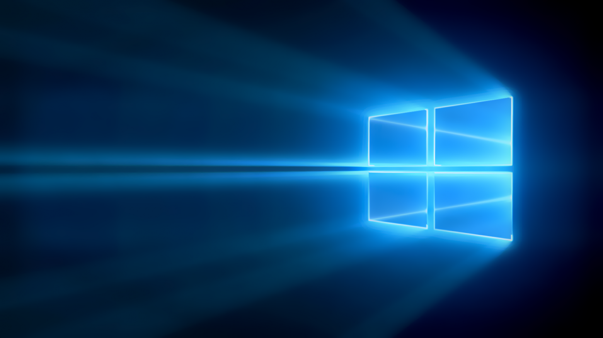
Технические аспекты
Чтобы осветить все технические аспекты и тонкости операционной системы Windows понадобится не менее 1000 страниц. Для особо любопытных советуем 7-е издание «Внутреннего устройства Windows« Марка Руссиновича, специалиста по внутреннему устройству Windows. Также можно почитать «Современные операционные системы« Эндрю Таненбаума и «Operating System Concepts«: в обеих книгах есть главы, посвященные Windows. Здесь же ограничимся рассмотрением инструментов взаимодействия приложений пользователя с операционной системой (Windows API) и архитектуры «оси».
Архитектура
Во многих многопользовательских операционных системах сама ОС отделяется от приложений. Код ядра ОС выполняется в привилегированном режиме процессора (режим ядра). Для него доступны системные данные и оборудование. В непривилегированном режиме (пользовательский режим) выполняется код приложений. Ему предоставляется ограниченный набор интерфейсов и ограниченный доступ к системным данным. Прямой доступ к оборудованию заблокирован. При вызове программой пользовательского режима системной функции процессор выполняет специальную команду, переключающую вызывающий поток (последовательность команд внутри процесса, планируемая Windows для исполнения) в режим ядра. Когда системная функция завершается, операционная система переключает контекст потока обратно в пользовательский режим и дает возможность вызывающей стороне продолжить работу.
Windows считается операционной системой с гибридным ядром. С одной стороны компоненты ядра Windows располагаются в вытесняемой памяти и взаимодействуют друг с другом путем передачи сообщений, как в микроядерных системах. С другой стороны ядро слишком велико (более 1 Мбайт), а большая часть кода ОС и кода драйверов устройств использует одно защищенное пространство памяти защищенного режима, что свойственно монолитным ОС. Это означает, что в теории любой компонент ОС или драйвер устройства может повредить данные, используемые другими системными компонентами. В Windows эта проблема решается за счет повышения качества и контроля происхождения сторонних драйверов через такие программы, как WHQL или KMCS. Одновременно применяются дополнительные технологии защиты ядра, такие как безопасность на базе виртуализации, функции Device Guard.
Рассмотрим ключевые системные компоненты, формирующие архитектуру системы. На рисунке ниже представлена упрощенная схема, на которой опущены некоторые элементы, например, сетевые компоненты и различные уровни драйверов. Первое, на что стоит обратить внимание — это линия, разделяющая части пользовательского режима и режима ядра. Как упоминалось выше, потоки пользовательского режима выполняются в закрытом адресном пространстве процессов. На время выполнения в режиме ядра они получают доступ к системному пространству. Таким образом, системные процессы, пользовательские процессы, процессы служб и подсистемы среды обладают собственным закрытыми адресными пространствами.
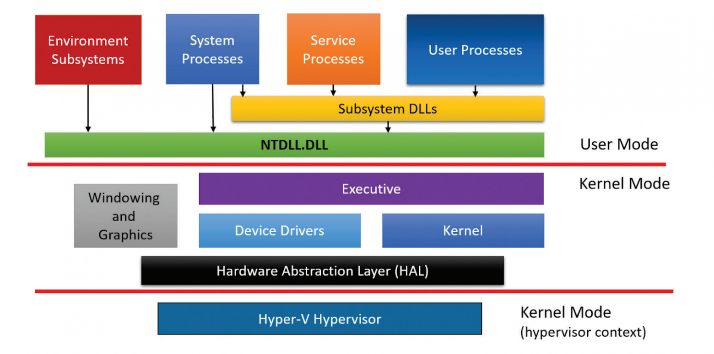
Упрощенная схема архитектуры Windows
Вторая линия разделяет компоненты режима ядра и гипервизор (Hyper-V). Гипервизор перехватывает многие привилегированные операции, выполняемые ядром, и эмулирует их таким образом, чтобы позволить на одной и той же машине одновременно работать нескольким операционными системам. Гипервизор работает на том же уровне привилегий процессора (0), что и ядро. Но из-за использования специализированных команд процессора (VT-x у процессоров Intel, SVM у АMD) он может изолироваться от ядра с сохранением контроля над ним и приложениями. Поэтому некоторые иногда применяют термин «кольцо -1».
Четыре базовых типа процессов пользовательского режима:
Пользовательские процессы. Эти процессы относятся к одному из следующих типов: 32- или 64-разрядные приложения Windows (приложения Windows Apps, работающие на базе среды Windows Runtime в Windows 8 и выше, включаются в эту категорию), 16-разрядные приложения Windows 3.1, 16-разрядные приложения MS-DOS, 32- и 64-разрядные приложения POSIX. Заметим, что 16-разрядные приложения могут выполняться только в 32-разрядных версиях Windows, а приложения POSIX в Windows 8 уже не поддерживаются.
Процессы служб. В эту категорию входят процессы, являющиеся хостами для служб Windows (например, службы планировщика задач и диспетчер печати). Обычно к службам предъявляется требование независимости выполнения от входа пользователя. Многие серверные приложения Windows (например, Microsoft SQL Server и Microsoft Exchange Server) также включают компоненты, выполняемые как службы.
Системные процессы. Фиксированные процессы, такие как процесс входа или диспетчер сеансов, не являются службами Windows. Другими словами, они не запускаются диспетчером служб.
Серверные процессы подсистем среды. Такие процессы реализуют часть поддержки среды ОС, предоставляемой пользователю и программисту. Изначально в Windows NT было три подсистемы среды: Windows, POSIX и OS/2. Подсистема OS/2 включалась только до Windows 2000, подсистема POSIX в последний раз была включена в Windows XP.Ultimate- и Enterprise-выпуски клиента Windows 7. Все серверные версии Windows 2008 R2 включают поддержку расширенной подсистемы POSIX, называемой SUA (Subsystem for UNIX-based Applications). Сейчас подсистема SUA не поддерживается и уже не включается как необязательное часть в версии Windows (Windows 10 версии 1607 включает подсистему Windows для Linux — WSL, Windows Subsystem for Linux).
Обратим внимание на блок DLL подсистем под блоками Процессы служб и Пользовательские процессы. В Windows пользовательские приложения не вызывают низкоуровневые сервисные функции операционной системы напрямую. Вместо этого они проходят через одну или несколько динамических библиотек (DLL) подсистем. Их роль состоит в том, чтобы преобразовывать документированные функции в соответствующие внутренние (недокументированные) вызовы системных функций, реализованных в основном в Ntdll.dll. Преобразование может включать (а может не включать) отправку сообщения процессу, обслуживающему пользовательский процесс.
Компоненты режима ядра:
Исполнительная система. Она содержит базовые сервисные функции ОС: управление памятью, управление процессами и потоками, безопасность, ввод/вывод, сетевая поддержка и межпроцессные коммуникации.
Ядро Windows. Низкоуровневые функции ОС: планирование потоков, диспетчеризация прерываний и исключений и многопроцессорная синхронизация. Также ядро предоставляет набор функций и базовых объектов, которые используются исполнительной системой для реализации высокоуровневых конструкций.
Драйверы устройств. Сюда входят как драйверы физических устройств, преобразующие вызовы пользовательских функций ввода/вывода в конкретные запросы ввода/вывода к устройству, так и драйверы устройств, не относящихся к физическому оборудованию, например драйверы файловой системы или сетевые драйверы.
Слой абстрагирования оборудования (HAL). Прослойка кода, изолирующее ядро, драйверы устройств и прочий исполняемый код Windows от платформенно-зависимых различий в работе оборудования, например различий между системными платами.
Оконная и графическая система. Реализация функций графического интерфейса (GUI), также известных как функции GDI: работа с окнами, элементы пользовательского интерфейса и графический вывод.
Уровень гипервизора. Включает всего-навсего один компонент: сам гипервизор. В этой среде нет ни драйверов, ни других модулей. При этом сам гипервизор состоит из нескольких внутренних уровней и служб: собственный диспетчер памяти, планировщик виртуальных процессов, управление прерываниями и таймером, функции синхронизации, разделы (экземпляры виртуальных машин) и внутрипроцессные коммуникации (IPC, Inter-Process Communication) и многие другие.
Windows API
Windows API (Application Programming Interface) — это программный интерфейс пользовательского режима для Windows. До появления 64-разрядной версии операционной системы программный интерфейс 32-разрядных версий Windows назывался Win32 API в отличие от исходного 16-разрядного Windows API (программный интерфейс для исходных 16-разрядных версий Windows). На данный момент термин Windows API или Win32 API относят как к 32-разрядным, так и к 64-разрядным версиям.
В «доисторические времена» Windows API состоял только из функций в стиле C. Выбор языка C был обусловлен тем, что написанный на нем код также мог использоваться из других языков. Он являлся достаточно низкоуровневым для предоставления сервиса ОС. Но огромное количество функций в сочетании с недостаточной последовательностью выбора имен и отсутствием логических группировок (вроде пространств имен C++) привели к тому, что в некоторых новых API используется другой механизм — модель COM.
COM базируется на двух основных принципах. Во-первых, клиенты взаимодействуют с объектами (серверные объекты COM) через интерфейсы — четко определенные контракты с набором логически связанных методов, сгруппированных посредством механизма диспетчеризации по виртуальным таблицам. Такой же механизм, к слову, обычно применяется компиляторами C++ для реализации диспетчеризации виртуальных функций. Таким образом обеспечивается двоичная совместимость и снимаются проблемы с декорированием имен компилятором. Поэтому, такие методы могут вызываться из многих других языков и компиляторов, включая C, C++, VB, языки .NET, Delphi и т. д. Вторым принципом является динамическая загрузка компонентов (вместо статической компоновки с клиентом).
WinRT
В Windows 8 появился новый API и исполнительная среда поддержки Windows Runtime (WinRT). WinRT состоит из платформенных сервисов, предназначенных для разработчиков приложений Windows Apps (приложения Windows Apps подходят для устройств, начиная от миниатюрных IoT-устройств до телефонов, планшетов, десктопных систем, ноутбуков и даже Xbox One и Microsoft HoloLens).
С точки зрения API платформа WinRT строится на базе COM, добавляя в базовую инфраструктуру COM различные расширения. С архитектурной точки зрения она обладает намного большей целостностью: в ней реализованы иерархии пространств имен, последовательная схема назначения имен и паттерны программирования. На базовом двоичном уровне WinRT API все равно строится на основе унаследованных двоичных файлов и API Windows. Это не новый «машинный» API для системы: ситуация немного напоминает то, как .NET строится на основе традиционного Windows API.
.NET Framework
.NET Framework является частью Windows. Он состоит из двух основных компонентов:
CLR (Common Language Runtime). Исполнительная среда .NET, включает JIT-компилятор для преобразования инструкций языка CIL в низкоуровневый язык машинных команд процессора, сборщик мусора, систему проверки типов, безопасность обращения к коду и т. д. Среда реализована в виде внутрипроцессного сервера COM (DLL) и использует различные средства, предоставляемые Windows API.
.NET Framework Class Library (FCL). Обширная подборка типов, реализующих функциональность, часто используемую в клиентских и серверных приложениях, — средства пользовательского интерфейса, поддержка сети, работа с базами данных и т. д.
На схеме представлены отношения между .NET Framework и ОС Windows:
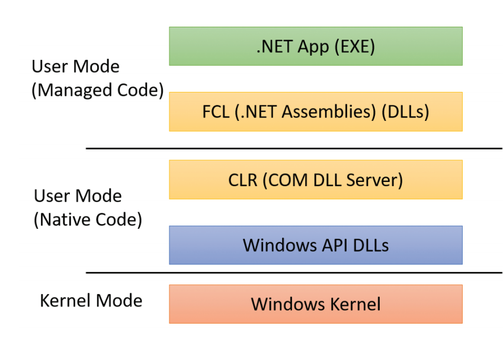
Отношение между .NET и ОС Windows. Термин «сервер COM» обычно относится к DLL библиотеке или исполняемому файлу (EXE), в котором реализованы классы COM.